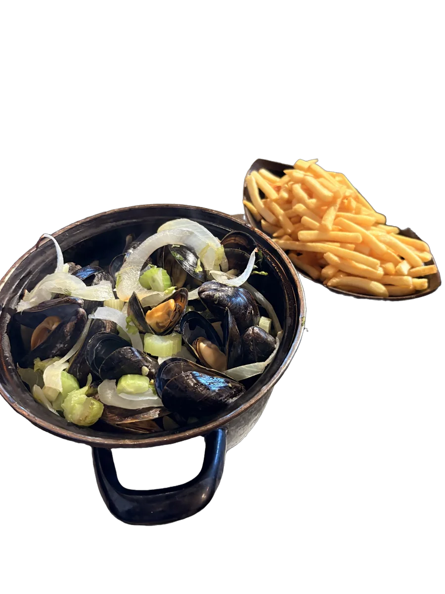
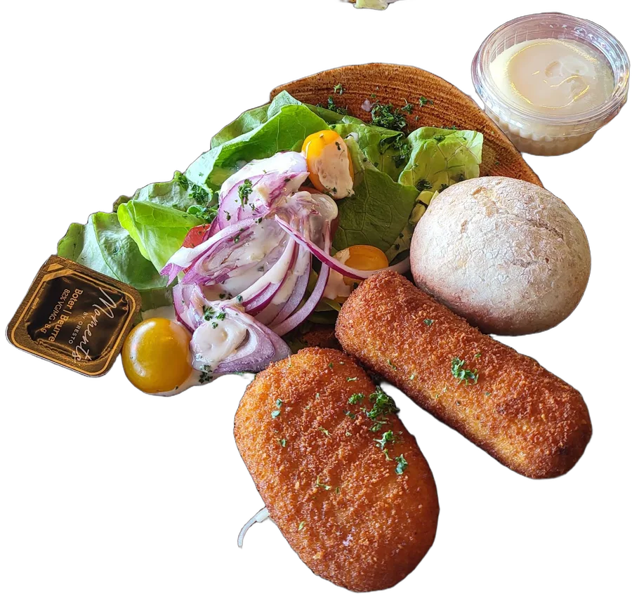
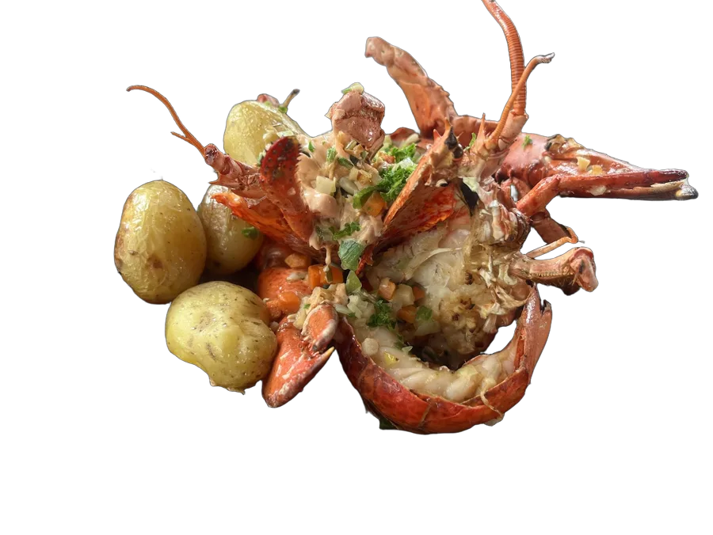
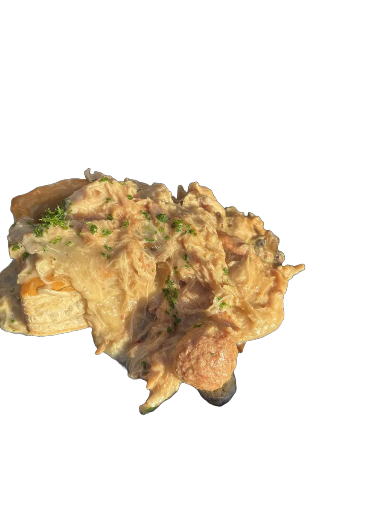
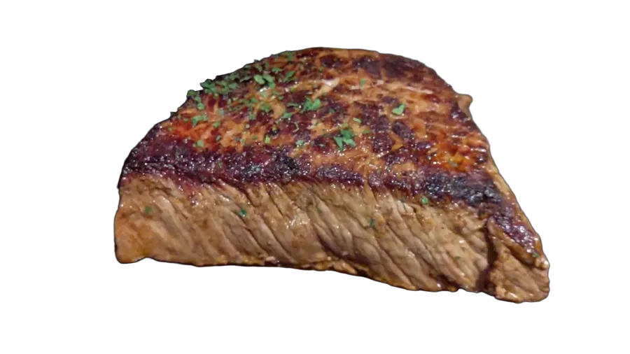
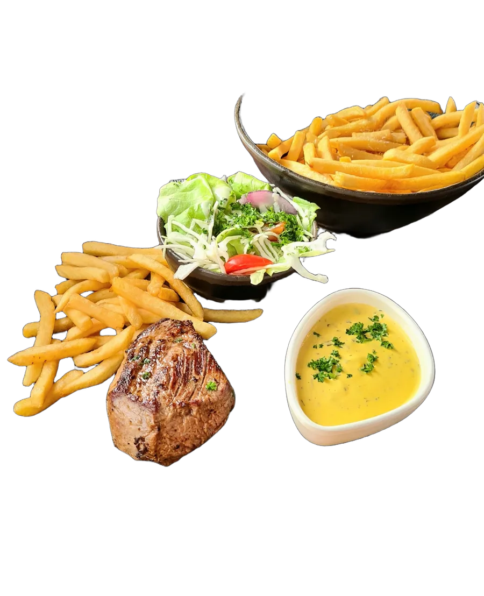
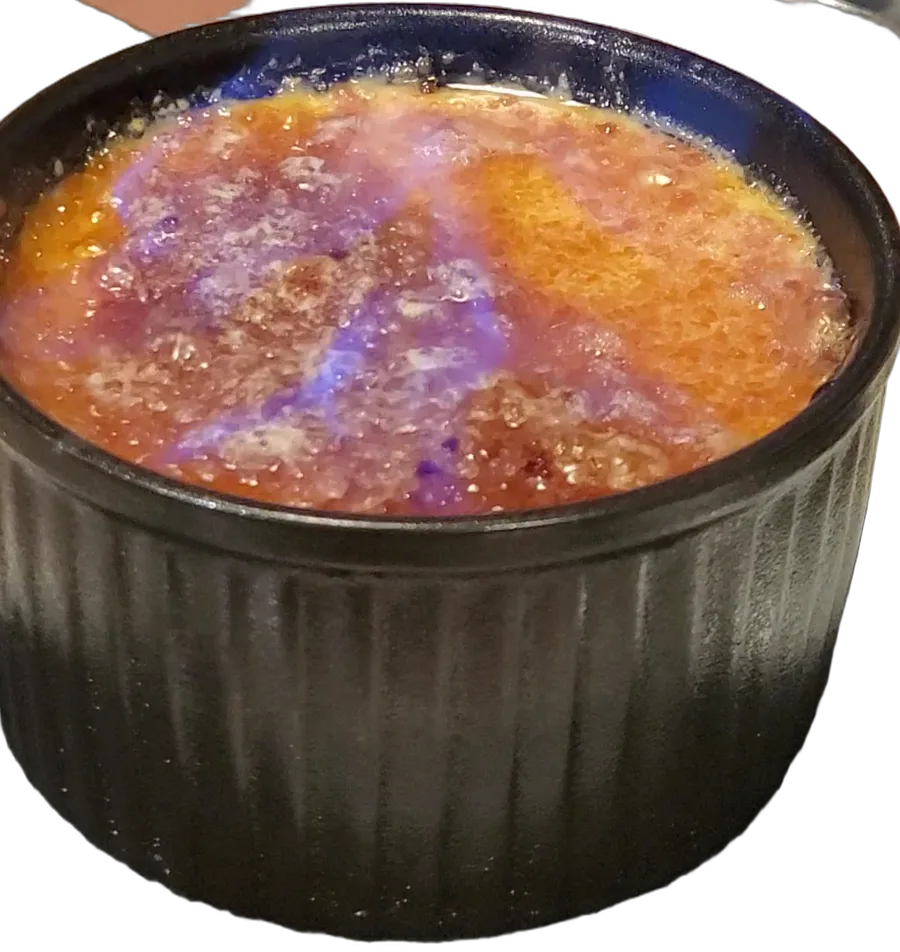
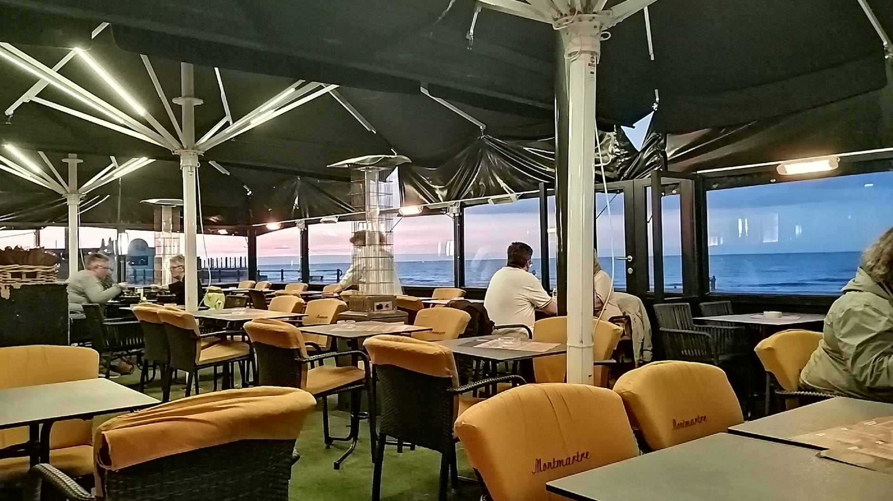
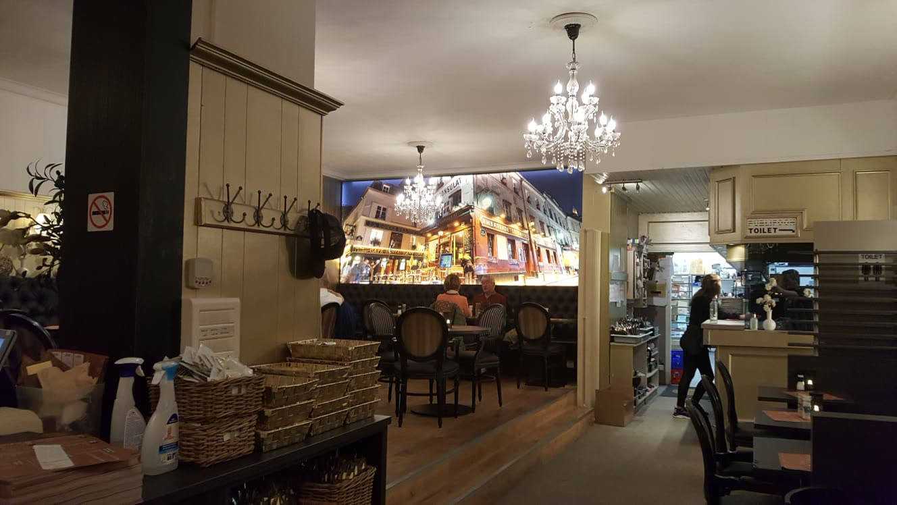
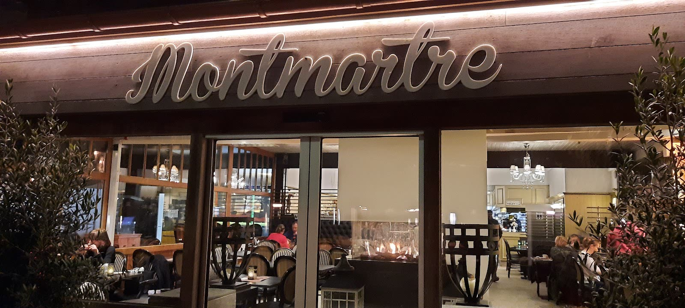

Mosselen
Natuur, met look of in witte wijn. Met frietjes, zoals het hoort.
Brasserie op de Zeedijk van Blankenberge, sinds 2005
Verwarmd terras, een speelhoek voor de kinderen en de klassiekers van de kust, elke dag vers.
Klassiekers van de kust, elke dag vers. Grote porties, eerlijke prijzen, en bij alles frietjes van het huis.

Natuur, met look of in witte wijn. Met frietjes, zoals het hoort.

Krokant gebakken, met verse salade en citroen.

Met groenteboter en krieltjes. Voor de dagen dat het feest mag zijn.

Huisbereid, met kip, champignons en balletjes in romige saus.

Gegrild zoals u het wil, met béarnaise of pepersaus.

Steak, frietjes, verse salade en saus: zo komt het op tafel.

Gekaramelliseerd en nog lauw. Het beste einde.
Ook pannenkoeken, salades, stoofvlees, visschotels en een kindermenu. Vraag naar de suggesties van de dag.

Op het terras zit u recht tegenover het strand. Bij frisse dagen staan de verwarmers aan.
Twintig zomers en twintig winters aan zee. Gasten die als kind kwamen voor de pannenkoeken, komen nu met hun eigen kinderen voor de mosselen. Het interieur is vernieuwd, de bediening is gebleven.


“De kaart is heel gevarieerd met voor elk wat wils. Snel bediend en de porties zijn groot. Zeker een aanrader.”
“Een mooie binnenspeeltuin voor jonge kindjes, gratis lolly bij het drinken. Eten is lekker en een zeer mooie prijs.”
“Vriendelijke bediening en eerlijke prijzen. Beste plek in Blankenberge om te eten.”